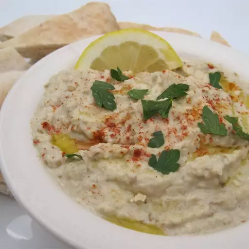

Baba Ghanoush

Description
Baba ghanoush is a savory, smoky dip or spread made with roasted eggplant, garlic, tahini, olive oil, and lemon juice. Adjust the amount of lemon juice and tahini to suit your taste. Delicious served with pita or raw veggies, alongside hummus, or on its own!
Prep Time: 5 minutes
Cook Time: 40 minutes
Additional Time: 3 hours
Servings: 12
Ingredients
- 1 large eggplant
- 2 to 4 tablespoons lemon juice, or to taste
- 1/4 cup tahini or to taste
- 2 tablespoons sesame seeds
- 2 cloves garlic, minced
- salt and pepper to taste
- 1 ½ tablespoons olive oil
Steps
- Preheat the oven to 400 degrees F (200 degrees C). Lightly grease a baking sheet.
- Place eggplant on the prepared baking sheet, and pierce holes in the skin with a fork. Roast in the preheated oven, turning occasionally, until very soft and tender, 30 to 40 minutes. Set eggplant aside until cool enough to handle; slice in half and scoop flesh into a colander or fine mesh sieve over a bowl; drain for 5 minutes.
- Place eggplant, lemon juice, tahini, sesame seeds, and garlic in blender, and puree. Season with salt and pepper to taste.
- Transfer eggplant mixture to a medium size mixing bowl, and slowly mix in olive oil. Refrigerate the baba ghanoush for 3 hours before serving.
Sourced from: allrecipies
Return to Home Page